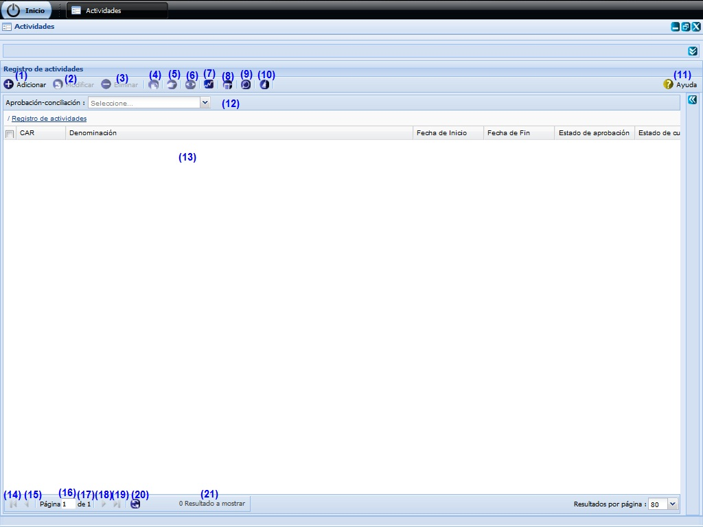
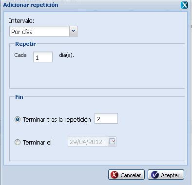
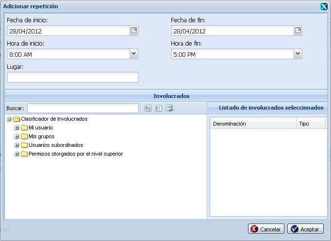
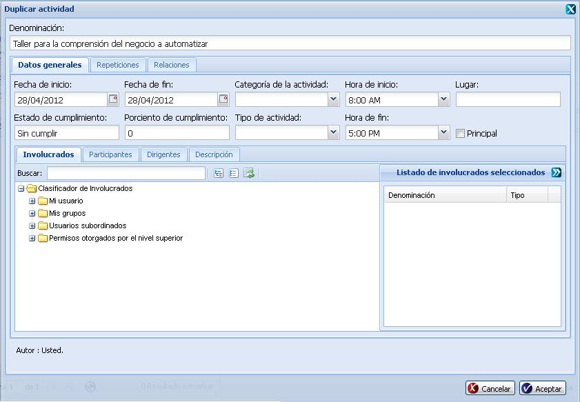
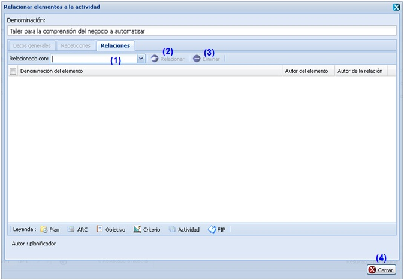
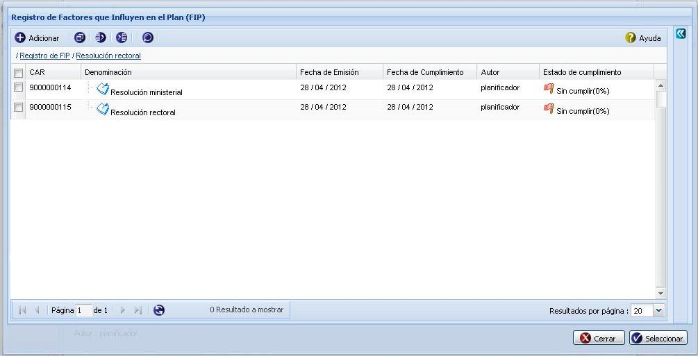
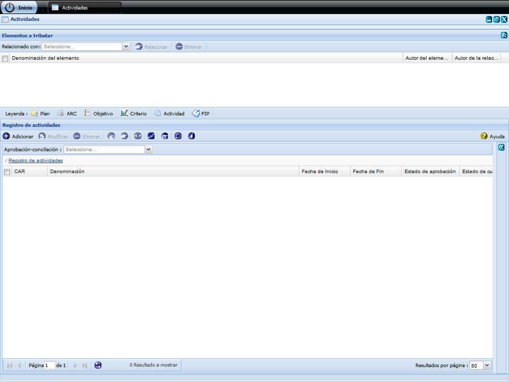

--ACTIVIDADES--
Esta funcionalidad permite realizar la configuración de Actividades necesarias para la gestión de planificación de actividades. Para acceder a estas funcionalidades el usuario debe estar autenticado y debe seleccionar la ruta: Inicio/Planificación/Planificación de actividades/Configuración/ Actividades, ver Figura 1.

Figura 1. Interfaz y acciones de la funcionalidad Actividades.
Las diferentes opciones que conforman la figura anterior permiten:
- Adicionar una actividad, ver Acápite Adicionar actividad, esta acción permite adicionar una actividad, cuando se presione el botón Aceptar o Aplicar de la interfaz el sistema mostrará un mensaje de información notificando que se adicionó la actividad.
- Modificar una actividad previamente seleccionada en el listado. Se mostrará la interfaz con los datos cargados, posibilitando que se modifiquen los que se requieran. La validación de cada uno de los campos de la interfaz será muy similar al descrito en el Acápite Adicionar actividad. En caso de seleccionar la opción Modificar y no hacer cambios en la información referente a la actividad seleccionado se debe mostrar un mensaje. Este botón estará deshabilitado hasta tanto no se haya seleccionado una actividad.
- Eliminar una actividad previamente seleccionado en el listado. Esta acción permite eliminar la(las) actividad(es), una vez seleccionada(s) la(las) misma(s) se procede a seleccionar la opción Eliminar de la interfaz, automáticamente se mostrará un mensaje de confirmación, que se puede Aceptar o Cancelar según sea el caso, de presionar la opción Aceptar el sistema le mostrará un mensaje de información sobre el éxito de la operación realizada, quedando eliminada(s) la(las) actividad(es) seleccionada(s), si cancela el mensaje de confirmación, el sistema permanece en la interfaz principal y no elimina la(las) actividad(es). Inicialmente la opción Eliminar de la interfaz estará deshabilitado hasta tanto no se haya seleccionado al menos una actividad.
- Duplicar actividad, ver acápite Duplicar actividad, esta acción permite duplicar una actividad a partir de una actividad seleccionada. Dicho botón estará deshabilitado hasta tanto no se haya seleccionado una actividad.
- Relacionar actividad(es), ver acápite Relacionar actividad, permite establecer relaciones de la actividad con otros elementos de la planificación que se encuentren registrados en el sistema. Este botón estará deshabilitado hasta tanto no se haya seleccionado una actividad.
- Gestionar observaciones a actividad, consultar acápite Gestionar observaciones a actividad referido a la descripción de las operaciones que se pueden realizar con las observaciones. Inicialmente la opción Gestionar observaciones a actividad de la interfaz estará deshabilitado hasta tanto no se haya seleccionado la actividad a gestionar una observación.
- Tributar actividad(es), ver acápite Tributar actividad(es).
- Observar notificaciones generadas, ver Acápite Observar notificaciones generadas .
- Búsqueda avanzada, ver Acápite Búsqueda avanzada, esta acción permite buscar una actividad entre las actividades adicionadas en el sistema.
- Limpiar filtro(s). Esta acción limpiará todos los criterios de búsqueda, deshabilitando los filtros realizados.
- Mostrar la ayuda de la funcionalidad.
- Aprobación-conciliación. Podrá realizar un filtrado de las actividades que se encuentren en un determinado nivel de aprobación, seleccionando uno de los dos posibles valores de la lista desplegable Aprobación-conciliación: Si o No. Una vez seleccionada la opción, el sistema le muestra en la interfaz 1 aquellos que coincidan con el valor de aprobación y conciliación especificado.
- Se muestra el listado de actividades.
- Ir a la primera página, mostrando las primeras actividades.
- Ir a la página anterior.
- Mostrar el número de la página donde se encuentra, se puede introducir el número de la página a la que se desea ir.
- Mostrar el número máximo de páginas.
- Ir a la siguiente página.
- Ir a la última página.
- Actualizar el listado de actividades.
- Mostrar la cantidad de resultados encontrados.
Adicionar actividad
Se presiona el botón Adicionar de la interfaz, ver opción (1) de la figura 1. Inmediatamente aparecerá una ventana donde se podrán especificar los datos relacionados con la actividad que se desea adicionar, ver Figura 2.

Figura 2. Interfaz Adicionar actividad.
Las opciones de la figura anterior permiten:
- Introducir la denominación de la actividad que desea insertar.
- Seleccionar la pestaña donde se gestionan los datos generales de la actividad.
- Seleccionar la pestaña donde podrá gestionar las veces que desea que se repita la actividad.
- Seleccionar la pestaña donde se podrá establecer relaciones entre la actividad que está adicionando y otros elementos de la planificación.
- Seleccionar la fecha de inicio.
- Seleccionar la fecha de fin.
- Seleccionar la categoría de la actividad.
- Seleccionar la hora de inicio.
- Introducir el lugar de la actividad.
- El estado de cumplimiento el sistema lo determinará a partir del valor registrado en porciento de cumplimiento.
- Introducir el porciento de cumplimiento que presentará la actividad a insertar.
- Seleccionar el tipo de actividad.
- Seleccionar la hora de fin.
- Marcar si la actividad será Principal.
- Seleccionar la pestaña donde se podrá seleccionar los representantes de las entidades que participarán en la actividad.
- Seleccionar la pestaña donde se podrá especificar quienes participarán en la actividad.
- Seleccionar la pestaña donde se podrá especificar quienes serán los responsables de la actividad.
- Seleccionar la pestaña donde se podrá ingresar la descripción detallada de la actividad.
- Cancelar las acciones y salir de la interfaz sin guardar los datos.
- Guardar los datos y limpiar los campos de la interfaz, permitiendo adicionar otra actividad.
- Adicionar los datos de la actividad al listado y cerrar la interfaz.
Validación de los campos:
- El campo Denominación es obligatorio, en caso de dejar este campo vacío y presionar los botones Aceptar o Aplicar el sistema le notificará el error, subrayando el campo en rojo y mostrando un mensaje de error, al pasar el cursor del mouse por encima del campo subrayado, y el mensaje de error “Por favor verifique hay campo(s) vacío(s)”. Este campo acepta caracteres alfanuméricos y los caracteres especiales (“%#@!*() _;:,?-.). Al escribir otro tipo de carácter no permitido notificará subrayando el campo en rojo y mostrando un mensaje de error.
- En el campo Porciento de cumplimiento solo podrá ingresar números entre los valores de 0 a 100. En caso de que ocurra el sistema debe mostrar el siguiente mensaje: “El valor máximo es de 100.”
- El campo Fecha de inicio y Fecha de fin son obligatorios, en caso de dejar estos campos vacíos y presionar los botones Aceptar o Aplicar el sistema le notificará el error, subrayando el campo en rojo y mostrando un mensaje de error, al pasar el cursor del mouse por encima del campo subrayado, y el mensaje de error “Por favor verifique hay campo(s) vacío(s)”. Debe considerar que el sistema solo permite seleccionar una fecha de inicio que sea menor o igual que la fecha de fin.
Repeticiones
En la pestaña Repeticiones el sistema permite registrar repeticiones en caso que el usuario desee que la actividad que está adicionando se vuelva a producir. Las repeticiones pueden ser periódicas (cuando el intervalo de repetición es uniforme) o aleatorio (cuando la repetición no es uniforme en el tiempo). Puede realizar la selección en el campo Tipo de repetición, a continuación se activará el botón Adicionar repeticiones. Ver Figura 3.

Figura 3. Pestaña repeticiones en la Operación Adicionar actividad.
Las diferentes opciones que conforman la figura anterior permiten:
- Seleccionar si la repetición es periódica o aleatoria.
- Adicionar repetición.
- Modificar la repetición.
- Eliminar una repetición establecida con anterioridad.
- Duplicar una repetición.
- Cancelar las acciones y salir de la interfaz sin guardar los datos.
- Guardar los datos y limpiar los campos de la interfaz, permitiendo adicionar otra actividad.
- Adicionar los datos de la repetición y cerrar la interfaz.
Si se encuentra adicionando repeticiones Periódicas debe definir la unidad de tiempo en que se producirán las repeticiones (días o semanas); la periodicidad, que se define registrando el número de repeticiones que se desea que se produzcan. Asimismo deberá determinar la fecha de finalización de la repetición, lo cual puede realizarse si registra la cantidad de repeticiones que se realizarán o si directamente selecciona una fecha en el calendario. Ver figura 4.

Figura 4. Parámetros solicitados para registrar la repetición periódica.
Si se encuentra adicionando repeticiones aleatorias, presione el botón Adicionar repeticiones y se mostrará la interfaz Adicionar repeticiones aleatorias como se muestra en la figura 5 la cual permite adicionar los datos de la nueva repetición aleatoria.

Figura 5. Operaciones con las Repeticiones aleatorias.
Duplicar actividad
Se presiona el botón Duplicar actividad de la interfaz, ver opción (4) de la figura 1. Inmediatamente aparecerá una ventana donde son mostrados los datos correspondientes a la actividad y es posible efectuar los cambios de interés, ver Figura 6.

Figura 6. Interfaz duplicar actividad.
Nota: Los nuevos datos introducidos a la hora de duplicar la actividad deben cumplir con las condiciones especificadas para el Adicionar actividad, en caso contrario se mostrarán los mensajes de información en dependencia del error cometido. Si se modifican correctamente los datos deseados, es mostrado un mensaje indicando que se ejecutó correctamente la operación.
Relacionar actividad
Se presiona el botón Relacionar actividad de la interfaz, ver opción (5) de la figura 1. Inmediatamente aparecerá una ventana donde es posible establecer las relaciones., ver Figura 7.

Figura 7. Interfaz Operación Definir el plan al que tributa la actividad.
Las opciones de la figura anterior permiten:
- Seleccionar de la lista desplegable del campo nombrado Relacionado con el tipo de elemento de la planificación con el que se desea relacionar la actividad a insertar. A continuación se activará el botón Relacionar. Presione dicho botón y se mostrará una interfaz con todos los elementos registrados en el sistema de acuerdo al tipo seleccionado, ver figura 8.
- Mostrar una interfaz con todos los elementos registrados en el sistema de acuerdo al tipo seleccionado, ver figura 8. Seleccione el elemento que desee relacionar y presione el botón Seleccionar. Seguidamente se mostrará un mensaje de información indicando que las relaciones fueron insertadas. Posteriormente se cerrará la ventana y la nueva relación se mostrará en el panel inferior de la pestaña Relaciones. Oprima el botón Cerrar si no desea efectuar más relaciones.
- Eliminar una relación establecida con anterioridad.
- Oprima el botón Cerrar si no desea efectuar relaciones o una vez establecida la relación.

Figura 8. Interfaz Operación Relacionar con FIP.
Tributar actividad(es).
Se presiona el botón Tributar actividad(es) de la interfaz, ver opción 7 de la figura 1. Inmediatamente aparecerá una ventana que permite a la actividad seleccionada relacionarse con los diferentes elementos que están definidos., ver Figura 9. En este caso se procede a Relacionar actividad(es), ver acápite Relacionar actividad(es).

Figura 9. Interfaz Tributar actividad.
Búsqueda avanzada
Para efectuar una búsqueda avanzada de una actividad en específico, debe seleccionar la opción Búsqueda avanzada de la figura 1, luego de presionado el mismo, el sistema le mostrará la interfaz Opciones de búsqueda donde tendrá que tener en cuenta los siguientes pasos: ver Figura 10.

Figura 10. Interfaz Búsqueda avanzada.
Las diferentes opciones que conforman la figura anterior permiten:
- Seleccionar pestaña de Autores.
- Seleccionar pestaña de Involucrados.
- Introducir el criterio de búsqueda para buscar objetivos. Esta acción permite buscar un objetivo en específico a partir del criterio introducido. Luego de introducido el criterio de búsqueda se muestra el autor o involucrado que cumple con los datos especificados. En caso de que no exista un autor o involucrado que coincida con el criterio de búsqueda especificado no se obtendrá ninguna respuesta.
- Expande todos los autores.
- Colapsa todos los autores.
- Refrescar todos los autores.
- Realizar la búsqueda en el árbol de autores o involucrados en dependencia de la pestaña seleccionada.
Gestionar observaciones a actividad
Se presiona el botón Gestionar observaciones a actividad de la interfaz, ver opción 6 de la figura 1. Inmediatamente aparecerá una ventana donde se podrán especificar los datos relacionados con la actividad que se le desea gestionar una observación, ver Figura 11.

Figura 11. Interfaz Registro de observaciones.
Las opciones de la figura anterior permiten:
- Adicionar observaciones, ver Acápite Adicionar observaciones, esta acción permite adicionar observaciones a la actividad.
- Eliminar una observación previamente seleccionada en el listado de observaciones de una actividad. Esta acción permite eliminar la(s) observación(es) deseada(s), una vez seleccionada(s) la(s) misma(s) se procede a seleccionar la opción Eliminar de la interfaz, automáticamente se mostrará un mensaje de confirmación, que se puede Aceptar o Cancelar según sea el caso, de presionar la opción Aceptar el sistema le mostrará un mensaje de información sobre el éxito de la operación realizada, quedando eliminada(s) la(s) observación(es) seleccionada(s), si cancela el mensaje de confirmación, el sistema permanece en la interfaz Registro de observaciones y no elimina la(s) observación(es). Inicialmente la opción Eliminar de la interfaz estará deshabilitado hasta tanto no se haya seleccionado la(s) observación(es) a eliminar.
- Mostrar listado de observaciones de la actividad.
- Cuando se presione el botón Cerrar de la interfaz el sistema mostrará en la actividad seleccionada el campo de Observaciones activo si adicionó alguna observación a la actividad seleccionada.
Adicionar observaciones
Se presiona el botón Adicionar observaciones de la interfaz, ver opción 1 de la figura 11. Inmediatamente aparecerá una ventana donde se podrán especificar las observaciones de la actividad, ver Figura 12.

Figura 12. Interfaz Adicionar observación.
Las opciones de la figura anterior permiten:
- Introducir el asunto de la observación que desea insertar a la actividad.
- Introducir la observación de la actividad. Este dato no es obligatorio.
- Cancelar las acciones y salir de la interfaz sin guardar los datos.
- Adicionar los datos de la observación y cerrar la interfaz. El sistema mostrará un mensaje de información notificando que se adicionó la observación a la actividad.
Validación de los campos:
- El campo Asunto es obligatorio, en caso de dejar este campo vacío y presionar los botones Aceptar o Aplicar el sistema le notificará error, subrayando el campo en rojo y mostrando un mensaje de error, al pasar el cursor del mouse por encima del campo subrayado, y el mensaje de error “Por favor verifique hay campo(s) vacío(s)”. Este campo acepta caracteres alfanuméricos y algunos caracteres especiales (“%#@!*() _;:,?-.). Al escribir otro tipo de carácter no permitido notificará subrayando el campo en rojo y mostrando un mensaje de error. Por último debe saber que no es posible adicionar una nueva observación con el mismo asunto de otra que ya está registrado en el sistema, de suceder esto el sistema le notificará con un mensaje de error.
- El campo Observación puede ser vacío y admite cualquier tipo de caracteres de longitud infinita.